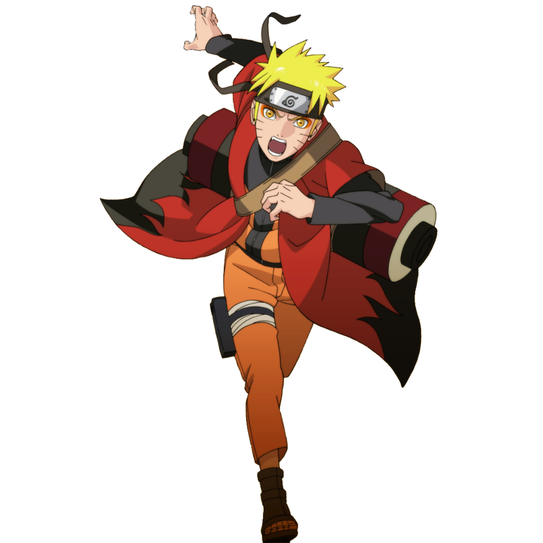
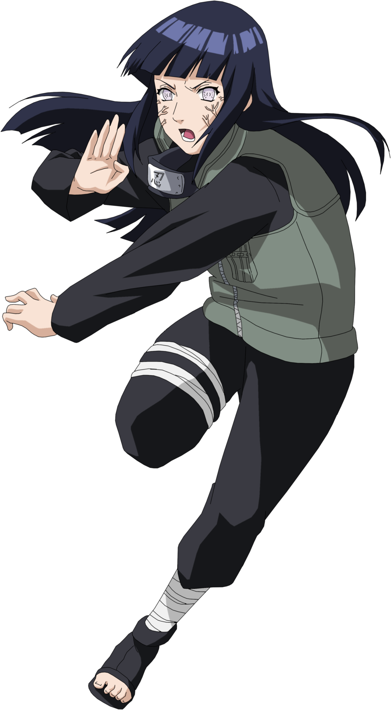
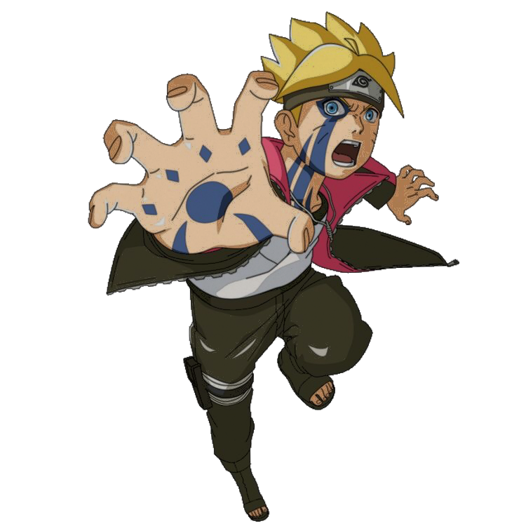

-
Naruto
HP 900
Descrição
Este é Naruto Uzumaki, carrega consigo a "Raposa de Nove Caudas" que consegue dar forças ao ninja até mesmo na beira da morte, aumentando seu HP em até 9x mais que o normal
-
Hinata
HP 800
Descrição
Está é Hinata, portadora do Byakugan, com uma visão de 360° é possível prever ataques, sendo capaz de anular até 8000HP lançados pelo oponente
-
Boruto
HP 500
Descrição
Este é Boruto, resultado da fusão entre os sangues Hyuuga e Uzumaki, possui um doujutsu mais conhecido como "olho puro" sendo capaz de enxergar o HP de todos seus oponentes